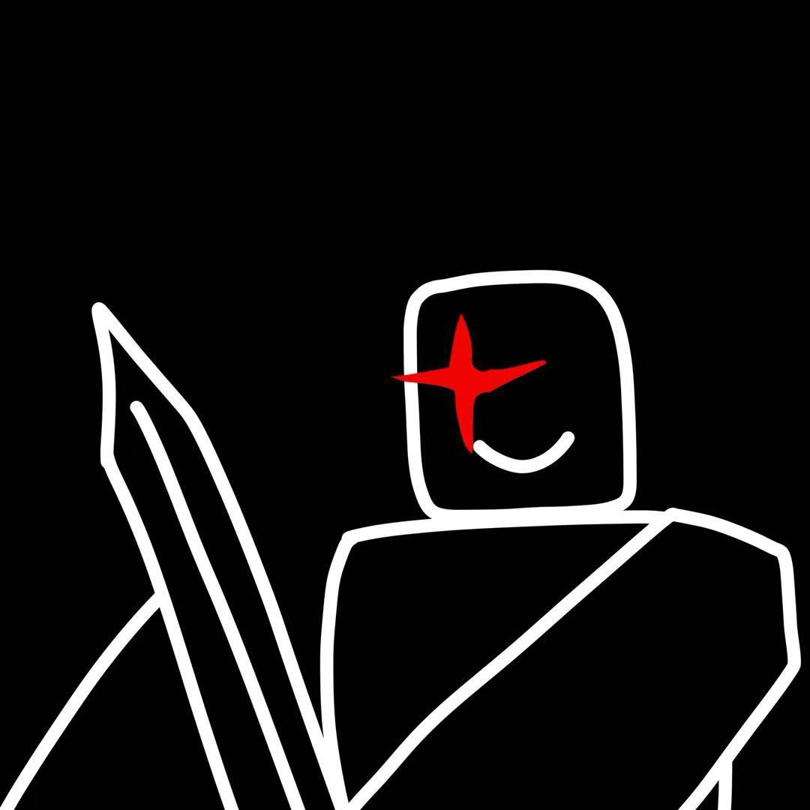
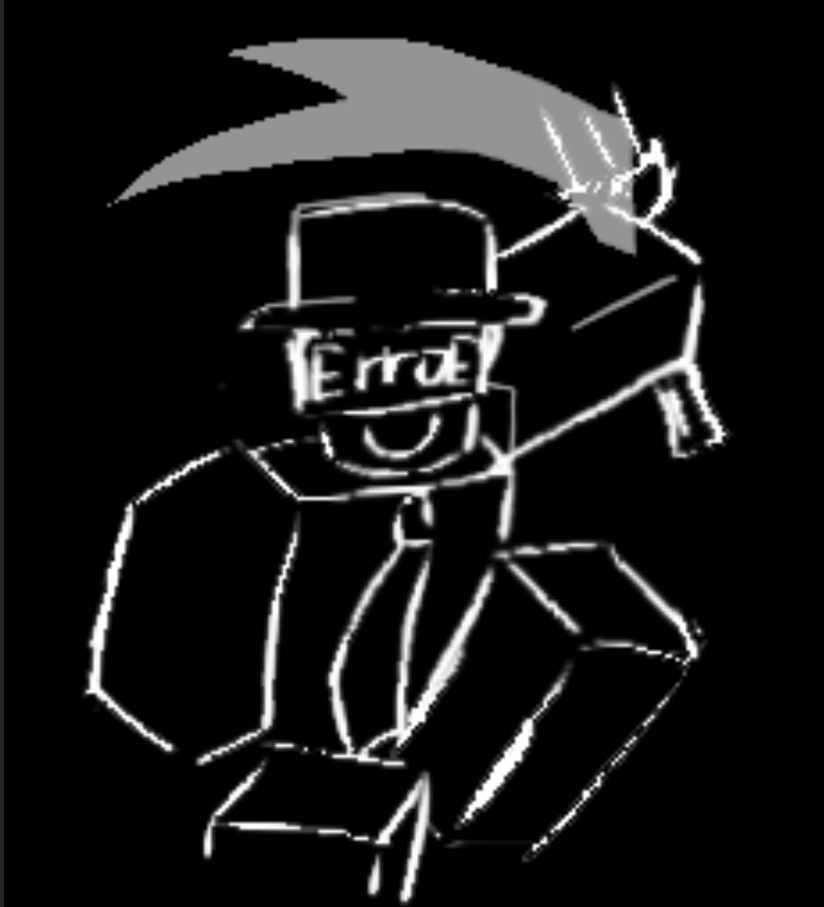
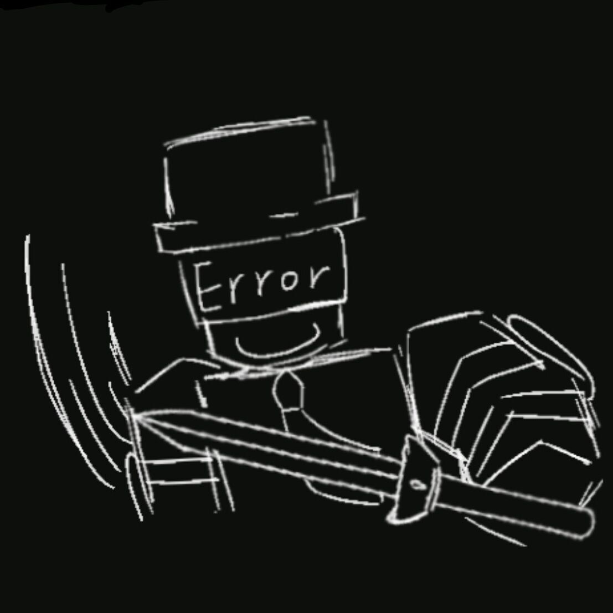

近年来，由于Roblox世界黑客事件率显著上升，政府首席科学家Builderman制造了Error系列机器人以解决黑客问题。Error系列包含多个型号，并非只有Error277一个。当某个地区需要援助时，政府会派遣对应型号的机器人前往处理。Error277是战斗型Error系列机器人，Builderman将每个Error系列机器人视为自己的孩子。Error277进入Death Place的时间是在与Coolkidd战斗之后。当时，由于Error277的队友前往了不同地区，他只能独自行动。又因Coolkidd的coolgui经过大量升级，Error277最终战败。就在他即将被摧毁之际，Shedletsky及其妻子BrightEyes赶到现场，政府增援也随之到达，Coolkidd及其队伍见状迅速逃离。最终，Error277被紧急修复。然而，后续有两名神秘人（政府内部人员）在无人知晓的情况下，将Error277的残躯丢弃至一处废弃地点。Error277用最后的意识环顾四周，最终倒下。整个过程被Gunour全程目睹，从Error277与Coolkidd的战斗开始到最后。Gunour出于实验目的将Error277带回修复，并注入了情感。但由于系统数据问题，Error277的记忆被篡改。

杀手
杀手阵营是游戏中的"猎人"，拥有强大的能力和技能，目标是消灭所有Robloxian。
Error277
图标（未上传）
背景故事：
“你会被[错误代码 277]踢出！”
开发状态：Error277 设计包含 3 个技能和 1 个普通攻击，目前仅 1 个技能已开发完毕，1 个技能处于开发中，其余技能尚未完成开发。

Slash
已开发完毕
伤害：
20hp
冷却：
0.6

Sword Lunge
未开发完毕
伤害：
5hp+5hp+20
冷却：
20秒
技能机制：该技能分为两个阶段进行攻击
前摇阶段：技能启动后，将有0.25秒的前摇时间，此阶段可被击晕
第一阶段：前摇结束后，Error277将挥动铁剑进行两次旋转攻击，每次造成5hp伤害，同时移速提升2.5，此阶段不可被击晕
第二阶段：第一阶段结束后，将进入0.97秒的第二阶段前摇，此阶段可被击晕
攻击释放：第二阶段前摇结束后，Error277将挥动铁剑进行强力攻击，造成20hp伤害，同时移速提升3，目标玩家将无法移动，此阶段不可被击晕
技能收尾：攻击完成后，技能进入冷却状态，Error277移速恢复正常，可被击晕